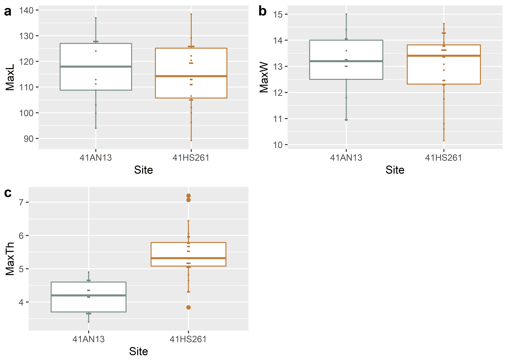
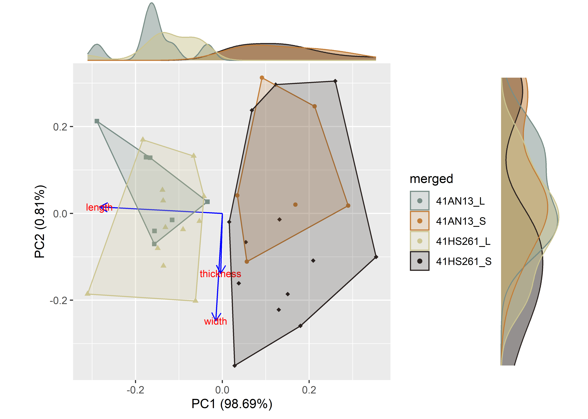
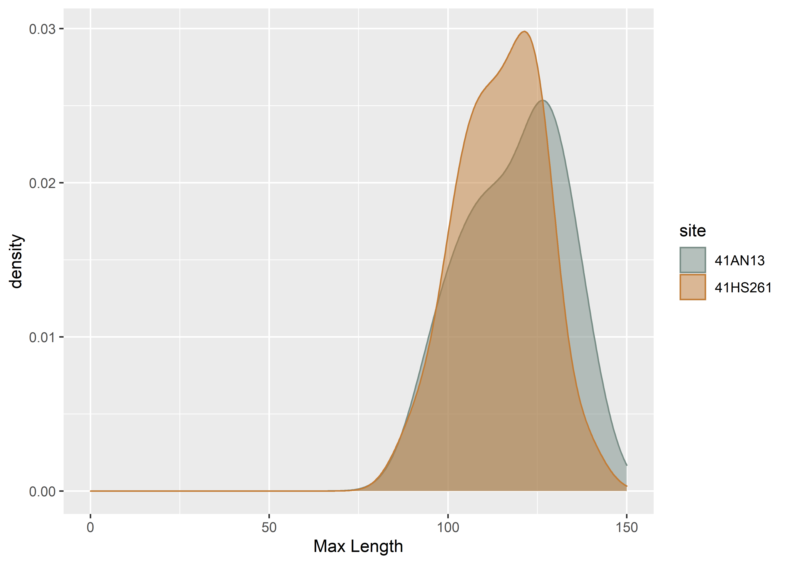
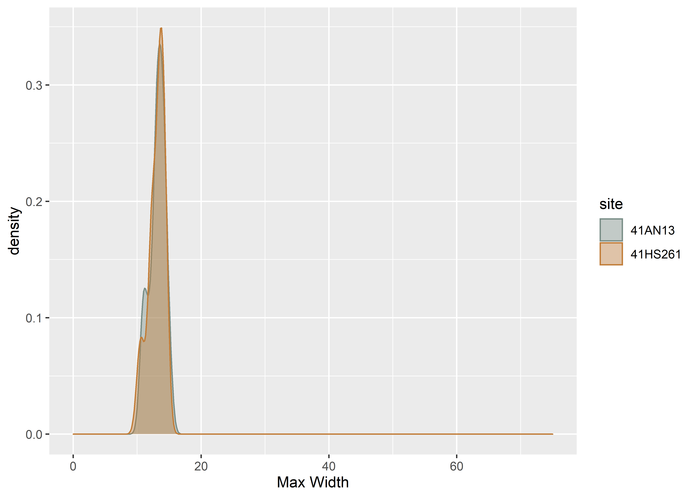
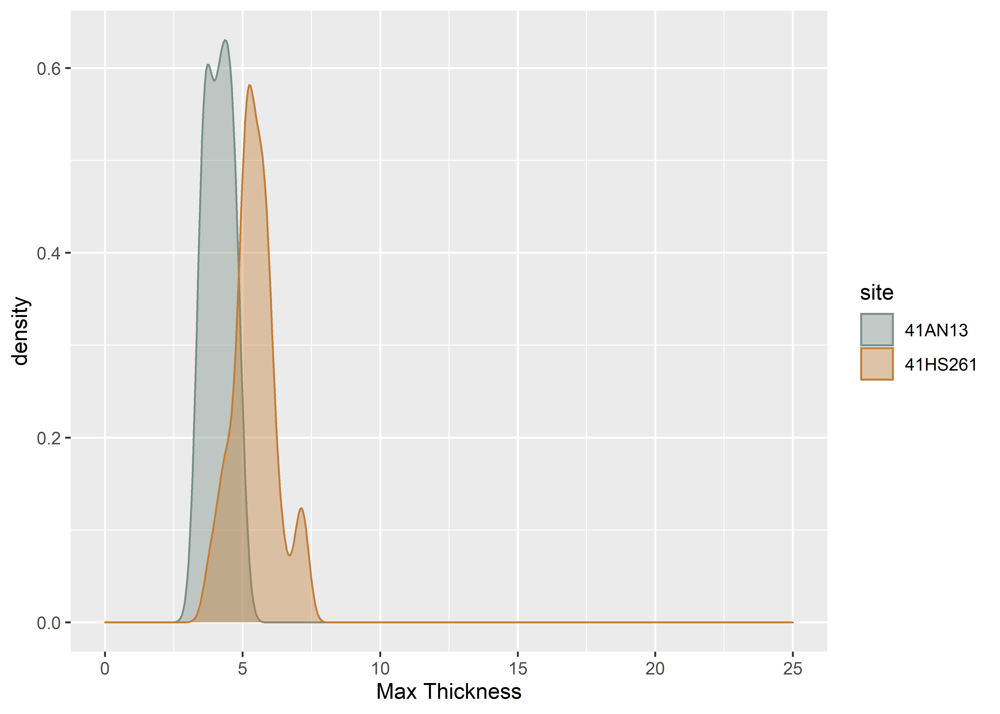

Chapter 1 Linear metrics by site
# install required analysis packages
#devtools::install_github("tidyverse/tidyverse")
#devtools::install_github("mlcollyer/RRPP")
#devtools::install_github("kassambara/ggpubr")
#devtools::install_github("sinhrks/ggfortify")
#devtools::install_git('https://bitbucket.org/nicholasehamilton/ggtern')
#devtools::install_github("karthik/wesanderson")
#devtools::install_github("daattali/ggExtra")
# load libraries
library(tidyverse)## -- Attaching packages ----------------------------------------------- tidyverse 1.3.0.9000 --## v ggplot2 3.3.3 v purrr 0.3.4
## v tibble 3.0.6 v dplyr 1.0.4
## v tidyr 1.1.2 v stringr 1.4.0
## v readr 1.4.0 v forcats 0.5.1## -- Conflicts ------------------------------------------------------- tidyverse_conflicts() --
## x dplyr::filter() masks stats::filter()
## x dplyr::lag() masks stats::lag()library(RRPP)
library(ggpubr)
library(ggfortify)
library(ggtern)## Registered S3 methods overwritten by 'ggtern':
## method from
## grid.draw.ggplot ggplot2
## plot.ggplot ggplot2
## print.ggplot ggplot2## --
## Remember to cite, run citation(package = 'ggtern') for further info.
## --##
## Attaching package: 'ggtern'## The following objects are masked from 'package:ggplot2':
##
## aes, annotate, ggplot, ggplot_build, ggplot_gtable, ggplotGrob, ggsave,
## layer_data, theme_bw, theme_classic, theme_dark, theme_gray, theme_light,
## theme_linedraw, theme_minimal, theme_voidlibrary(cluster)
library(wesanderson)
library(ggExtra)1.1 Set working directory, load data, and define variables
# set working directory
setwd(getwd())
data <- read.csv("linear.csv", header = TRUE, as.is=TRUE)
# define variables
maxl <- data$length # maximum length
maxw <- data$width# maximum width
maxth <- data$thickness # maximum thickness
site <- data$site # site name
# print data
knitr::kable(data,
align = "ccccc",
caption = "Attributes included in linear data (all measurements in mm).")| spec | site | length | width | thickness |
|---|---|---|---|---|
| 79 | 41AN13 | 99.80 | 10.90 | 3.70 |
| 81 | 41AN13 | 94.00 | 11.80 | 4.60 |
| 56 | 41AN13 | 128.50 | 13.00 | 4.70 |
| 63 | 41AN13 | 127.00 | 14.10 | 4.90 |
| 72 | 41AN13 | 127.80 | 13.30 | 4.10 |
| 74 | 41AN13 | 124.00 | 14.00 | 4.40 |
| 77 | 41AN13 | 112.90 | 13.00 | 4.20 |
| 76 | 41AN13 | 111.20 | 14.40 | 3.60 |
| 66 | 41AN13 | 127.00 | 15.00 | 3.70 |
| 70 | 41AN13 | 136.90 | 13.60 | 3.40 |
| 80 | 41AN13 | 108.80 | 11.00 | 3.60 |
| 78 | 41AN13 | 103.00 | 12.50 | 4.30 |
| 75 | 41AN13 | 118.00 | 13.20 | 4.60 |
| an13 | 41AN13 | 137.00 | 14.00 | 4.00 |
| 1 | 41HS261 | 125.72 | 12.44 | 6.44 |
| 2 | 41HS261 | 129.10 | 12.04 | 5.93 |
| 3 | 41HS261 | 89.21 | 11.75 | 5.79 |
| 4 | 41HS261 | 110.52 | 10.80 | 5.18 |
| 5 | 41HS261 | 119.96 | 14.30 | 5.99 |
| 6 | 41HS261 | 96.31 | 10.16 | 3.84 |
| 7 | 41HS261 | 105.70 | 12.48 | 5.10 |
| 9 | 41HS261 | 125.47 | 14.25 | 5.57 |
| 10 | 41HS261 | 106.47 | 10.60 | 4.28 |
| 11 | 41HS261 | 113.25 | 14.43 | 7.07 |
| 12 | 41HS261 | 99.93 | 12.32 | 6.06 |
| 13 | 41HS261 | 120.40 | 12.27 | 5.08 |
| 14 | 41HS261 | 102.03 | 14.30 | 4.81 |
| 15 | 41HS261 | 105.75 | 13.73 | 5.73 |
| 16 | 41HS261 | 112.59 | 13.82 | 5.48 |
| 17 | 41HS261 | 138.40 | 14.63 | 7.20 |
| 18 | 41HS261 | 122.14 | 13.54 | 5.32 |
| 19 | 41HS261 | 111.40 | 13.66 | 4.33 |
| 21 | 41HS261 | 119.37 | 13.41 | 4.99 |
| 22 | 41HS261 | 104.23 | 13.65 | 5.21 |
| 23 | 41HS261 | 125.15 | 13.70 | 5.30 |
| 24 | 41HS261 | 118.61 | 12.85 | 5.12 |
| 25 | 41HS261 | 125.57 | 13.08 | 5.61 |
| 26 | 41HS261 | 114.27 | 13.30 | 4.65 |
| 27 | 41HS261 | 126.46 | 13.90 | 5.75 |
1.2 Boxplots for variable by site
# boxplot of maximum length ~ site
sitemaxl <- ggplot(data, aes(x = site, y = maxl, color = site)) +
geom_boxplot() +
geom_dotplot(binaxis = 'y', stackdir = 'center', dotsize = 0.3) +
scale_colour_manual(values = wes_palette("Moonrise2")) +
theme(legend.position = "none") +
labs(x = 'Site', y = 'MaxL')
# boxplot of maximum width ~ site
sitemaxw <- ggplot(data, aes(x = site, y = maxw, color = site)) +
geom_boxplot() +
geom_dotplot(binaxis = 'y', stackdir = 'center', dotsize = 0.3) +
scale_colour_manual(values = wes_palette("Moonrise2")) +
theme(legend.position = "none") +
labs(x = 'Site', y = 'MaxW')
# boxplot of maximum thickness ~ site
sitemaxth <- ggplot(data, aes(x = site, y = maxth, color = site)) +
geom_boxplot() +
geom_dotplot(binaxis = 'y', stackdir = 'center', dotsize = 0.3) +
scale_colour_manual(values = wes_palette("Moonrise2")) +
theme(legend.position = "none") +
labs(x = 'Site', y = 'MaxTh')
# render figure
sitefigure<-ggarrange(sitemaxl,sitemaxw,sitemaxth,
labels = c("a","b","c"),
ncol = 2, nrow = 2)## `stat_bindot()` using `bins = 30`. Pick better value with `binwidth`.
## `stat_bindot()` using `bins = 30`. Pick better value with `binwidth`.
## `stat_bindot()` using `bins = 30`. Pick better value with `binwidth`.# plot figure
sitefigure

Figure 1.1: Boxplots for maximum length, width, and thickness for Jowell knives from 41AN13 and 41HS261.
1.3 Ternary plot
#attributes for plot
df <- data[c(3:5)]
pch.gps.gp <- c(15,19)[as.factor(site)]
col.gps.gp <- wes_palette("Moonrise2")[as.factor(site)]
# load data
tern <- ggtern(data = data, aes(maxl, maxw, maxth)) +
geom_point(shape = pch.gps.gp, col = col.gps.gp) +
scale_T_continuous(limits = c(0, 0.2)) +
scale_L_continuous(limits = c(0.8, 1)) +
scale_R_continuous(limits = c(0, 0.2))
# render plot
tern
1.4 Principal Components Analysis for site
#pca
pca <- autoplot(prcomp(df),
data = data,
asp = 1,
shape = pch.gps.gp,
colour = 'site',
loadings = TRUE,
loadings.colour = 'blue',
loadings.label = TRUE,
loadings.label.size = 3,
frame = TRUE) +
scale_fill_manual(values = wes_palette("Moonrise2")) +
scale_colour_manual(values = wes_palette("Moonrise2"))## Adding missing grouping variables: `site`ggMarginal(pca, groupColour = TRUE, groupFill = TRUE)

Figure 1.2: Principal Components Analysis by site.
1.5 Density plots for variable ~ group
# density plot for maxl by site
ggplot(data, aes(x = maxl, fill = site, colour = site)) +
geom_density(alpha = .5) +
scale_fill_manual(values = wes_palette("Moonrise2")) +
scale_colour_manual(values = wes_palette("Moonrise2")) +
xlim(0,150) +
labs(x = 'Max Length', y = 'density')
# density plot for maxw by site
ggplot(data, aes(x = maxw, fill = site, colour = site)) +
geom_density(alpha = .4) +
scale_fill_manual(values = wes_palette("Moonrise2")) +
scale_colour_manual(values = wes_palette("Moonrise2")) +
xlim(0,75) +
labs(x = 'Max Width', y = 'density')
# density plot for maxth by site
ggplot(data, aes(x = maxth, fill = site, colour = site)) +
geom_density(alpha = .4) +
scale_fill_manual(values = wes_palette("Moonrise2")) +
scale_colour_manual(values = wes_palette("Moonrise2")) +
xlim(0,25) +
labs(x = 'Max Thickness', y = 'density')
1.6 Analyses of Variance (ANOVA) for variable ~ site
1.6.1 Maximum length of Jowell knives
# anova = maximum length ~ site
siteml <- lm.rrpp(maxl ~ site, SS.type = "I",
data = data, iter = 9999,
print.progress = FALSE)
anova(siteml)##
## Analysis of Variance, using Residual Randomization
## Permutation procedure: Randomization of null model residuals
## Number of permutations: 10000
## Estimation method: Ordinary Least Squares
## Sums of Squares and Cross-products: Type I
## Effect sizes (Z) based on F distributions
##
## Df SS MS Rsq F Z Pr(>F)
## site 1 113.6 113.62 0.01963 0.7407 0.32984 0.3938
## Residuals 37 5675.5 153.39 0.98037
## Total 38 5789.1
##
## Call: lm.rrpp(f1 = maxl ~ site, iter = 9999, SS.type = "I", data = data,
## print.progress = FALSE)1.6.2 Maximum width of Jowell knives
# anova = maximum width ~ site
sitemw <- lm.rrpp(maxw ~ site, SS.type = "I",
data = data, iter = 9999,
print.progress = FALSE)
anova(sitemw)##
## Analysis of Variance, using Residual Randomization
## Permutation procedure: Randomization of null model residuals
## Number of permutations: 10000
## Estimation method: Ordinary Least Squares
## Sums of Squares and Cross-products: Type I
## Effect sizes (Z) based on F distributions
##
## Df SS MS Rsq F Z Pr(>F)
## site 1 0.113 0.11292 0.00202 0.0748 -0.84786 0.7885
## Residuals 37 55.837 1.50911 0.99798
## Total 38 55.950
##
## Call: lm.rrpp(f1 = maxw ~ site, iter = 9999, SS.type = "I", data = data,
## print.progress = FALSE)1.6.3 Maximum thickness of Jowell knives
# anova = maximum thickness ~ site
sitemth <- lm.rrpp(maxth ~ site, SS.type = "I",
data = data, iter = 9999,
print.progress = FALSE)
anova(sitemth)##
## Analysis of Variance, using Residual Randomization
## Permutation procedure: Randomization of null model residuals
## Number of permutations: 10000
## Estimation method: Ordinary Least Squares
## Sums of Squares and Cross-products: Type I
## Effect sizes (Z) based on F distributions
##
## Df SS MS Rsq F Z Pr(>F)
## site 1 15.275 15.2749 0.46124 31.676 3.7951 1e-04 ***
## Residuals 37 17.842 0.4822 0.53876
## Total 38 33.117
## ---
## Signif. codes: 0 '***' 0.001 '**' 0.01 '*' 0.05 '.' 0.1 ' ' 1
##
## Call: lm.rrpp(f1 = maxth ~ site, iter = 9999, SS.type = "I", data = data,
## print.progress = FALSE)